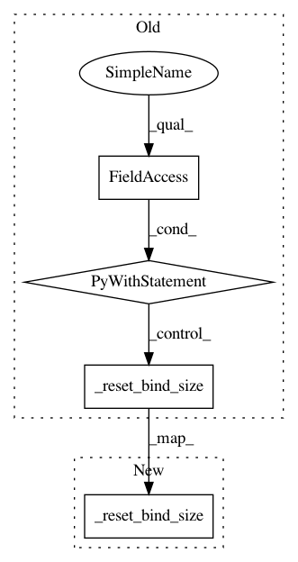

d15a15df582f43d9bc65a434db0d64c9e276b724,python/magent/builtin/mx_model/dqn.py,DeepQNetwork,train,#DeepQNetwork#Any#Any#,205
Before Change
batch_target = self._calc_target(batch_next_view, batch_next_feature,
batch_reward, batch_terminal)
with self.ctx:
self._reset_bind_size(batch_size)
batch = mx.io.DataBatch(data=[mx.nd.array(batch_view),
mx.nd.array(batch_feature)],
label=[mx.nd.array(batch_action),
mx.nd.array(batch_target),
mx.nd.array(batch_mask)])
self.model.forward(batch, is_train=True)
self.model.backward()
loss = self.model.get_outputs()[1].asnumpy()
self.model.update()
total_loss += loss
if ct % self.target_update == 0:
self._copy_network(self.target_model, self.model)
if ct % print_every == 0:
After Change
batch_target = self._calc_target(batch_next_view, batch_next_feature,
batch_reward, batch_terminal)
self._reset_bind_size(batch_size)
batch = mx.io.DataBatch(data=[mx.nd.array(batch_view),
mx.nd.array(batch_feature)],
label=[mx.nd.array(batch_action),
mx.nd.array(batch_target),
In pattern: SUPERPATTERN
Frequency: 3
Non-data size: 4
Instances
Project Name: geek-ai/MAgent
Commit Name: d15a15df582f43d9bc65a434db0d64c9e276b724
Time: 2017-11-23
Author: zhenglianmin96@163.com
File Name: python/magent/builtin/mx_model/dqn.py
Class Name: DeepQNetwork
Method Name: train
Project Name: geek-ai/MAgent
Commit Name: 4ee4c9129a0006abc2e475bb63039d2bdb97153f
Time: 2017-11-24
Author: zhenglianmin96@163.com
File Name: python/magent/builtin/mx_model/a2c.py
Class Name: AdvantageActorCritic
Method Name: infer_action
Project Name: geek-ai/MAgent
Commit Name: 4ee4c9129a0006abc2e475bb63039d2bdb97153f
Time: 2017-11-24
Author: zhenglianmin96@163.com
File Name: python/magent/builtin/mx_model/a2c.py
Class Name: AdvantageActorCritic
Method Name: train